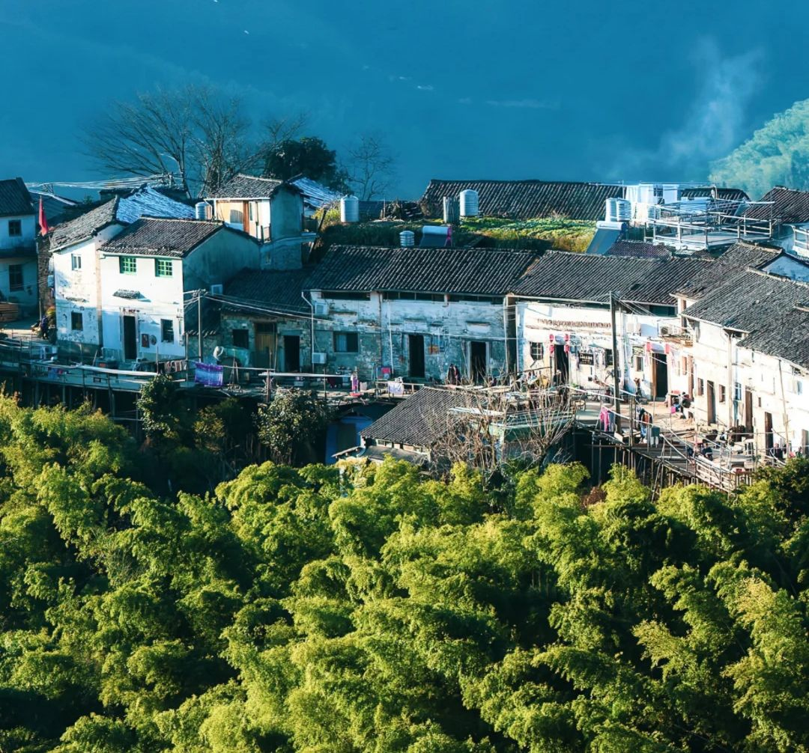

川西民居是汉族民居建筑流派之一。因其所处的特殊地理位置和相应的气候条件，建筑选材极具独特的川西风格。川西平原地理复杂，多山地丘陵，提供了木头、竹林等丰富的建材来源。同时，多元文化的交流融合影响着川西民居的建筑风格。
- 


自然因素
川西平原又称成都平原、川西坝子，位于四川盆地西部。四川境内多山地和高原，盆地面积较小，且盆地内丘陵纵横。川西平原包含平原本身以及其周围的山地丘陵，地理环境复杂。这种复杂的地理环境为川西木结构民居提供了丰富的建材来源，如木材、竹林、黏土、稻草等基础的建材。 川西地区属于亚热带季风性湿润气候，降水较多，日照较少，潮湿的气候条件造就了当地特殊的冷摊瓦建筑风格，因为此设计可以加快空气流动，除湿除潮。同时，当地多斜风细雨，日照较少的气候条件还造就了其独特的“宽出檐”建筑设计风格。
人文因素
川西平原富含农耕、儒家、道教、移民等多元文化，其建筑风格在一定程度上受到了这些文化的影响。

农耕文化
川西盛产水稻，水田区域水网稠密，将陆地分割为许多小片，因此民居多为随田散居，这就形成了川西独特的林盘文化。在民居细部构件和室内装修中，常见到以“渔、樵、耕、读”等封建社会生活模式为题材的装饰，同时，牛、马、鸡、鸭等家畜家禽的形象也被更多地搬上了门板、屋檐。祈求五谷丰登和风调雨顺的吉祥图案也更多地出现在民居装饰中。

儒家文化
儒家文化是中国传统文化中一个重要的部分，在川西民居的布局中也有所体现。如儒家的“伦理、等级、秩序”等封建家族的级制就体现在川西四合院的内宅居住分配中。“北屋为尊，两厢次之，倒座为宾，杂屋为附”的四合院布局完全是父慈子孝、夫唱妇随、事兄以悌、朋交以义的现实转换。但是川西地区远离中原，相对闭塞，因此没有完全地拘泥于正统的儒家文化，而是在其基础上有所创新。川西民居结构中的“歪龙门”正是创新的体现，龙门呈八字形状，且不正对堂屋，都是歪着开，意为趋恶辟邪，财不外露。

道教文化
“蜀”是中国道教的重要发源地，川西平原中的青城山是最早的道场。道教中的神仙以及神仙手中的法器，如“暗八仙”等，常作为民居装饰的题材，带有宗教含义的图案“仙鹤”常被用作民居装饰，来表达民众对于吉祥，忠贞，长寿的美好愿望。东西南北，纵横古今，因时因地，我国传统的农耕文化又内含着鲜明的“在地性”，古人重视天人合一，宜居宜养，道统的哲学思想贯彻其中，位于成都平原及丘陵地区的川西林盘正是这样的生态缩影。

移民文化
四川历史上经历了八次移民大潮，对巴蜀建筑文化的演变发展带来深刻的影响。大量移民入川，带来了他们原住地的建筑装饰技术和审美观念，有的迅速融入当地的建筑文化中去，兼收并蓄，有的完全保持自己的习俗和文化，使得成都平原地区的民居装饰呈现出不同的风格。成都平原内福建会馆、广东会馆等的存留，生动地记录着移民的真实历史，同时，江南地区特有的封火山墙也丰富了川西当地的建筑造型